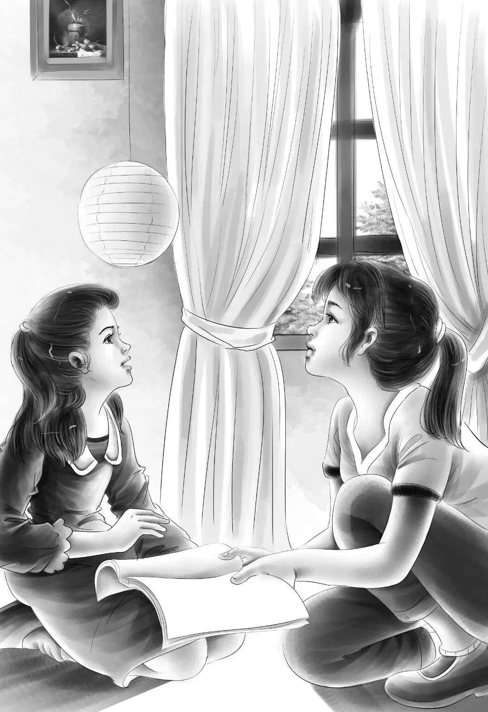

The Door Bangs
奥登家四兄妹的精彩暑假生活是从一声撞门声开始的。
四个孩子和爷爷一起住在大宅子里，日子过得温馨而平静。叔叔大乔已经和新婚妻子爱丽丝去了欧洲。一切似乎都很安宁，直到有一天，“咣”的一声，门被撞开了。
是奥登先生。
班尼说：“爷爷好呀！”
“好。”奥登先生应了一声。
一打完招呼，他就直接朝前厅走去，猛地关上了门。
“咦？”班尼想，“爷爷这是怎么了？”
他跑上楼，杰西和维莉正在看书。
“听着，”班尼大声说，“爷爷肯定遇到什么麻烦事儿了。他‘砰’地闯进门来，只说了一声‘好’，可他平时总是说‘你好，班尼，今天怎么样’。”
杰西立刻合上书，坐了起来。
“告诉亨利了吗？”她问班尼。
“没有，”班尼说，“我直接过来找你，还没来得及见他呢。”
“亨——利！”杰西叫道。
“怎么了？”亨利走进大厅。一听到杰西喊他，他就知道一定是发生什么事儿了。

“班尼说爷爷刚刚回来，摔了门，也没怎么跟他说话。”
亨利站在门口，愣住了。“爷爷现在在哪儿，宝贝？”他问弟弟。
“在前厅，门从里面反锁着，”班尼说，“关门的时候也是‘咣’的一声。”
“哦，天哪！”亨利说。
“不会有什么事儿吧？”维莉担心地问，她漂亮的脸蛋有些发白。
“我们得去跟他谈谈。”亨利冷静地说。
孩子们互相看了看，慢慢地朝楼下走去。亨利深吸一口气，敲了敲门。
“进来。”奥登先生喊道。他的声音听起来有点儿疲惫。孩子们看到爷爷坐在那儿，头埋在手里。
“爷爷，您别发愁，有什么麻烦事儿尽管告诉我们吧！”班尼大声说。
“是啊，爷爷，”亨利说，“平时我们有烦心事都会告诉您，现在您有了麻烦，就让我们来帮您吧！”
“乖孩子，我倒希望你们能帮帮我，”奥登先生一脸沮丧，“可我不知道你们能做什么。”
孩子们坐在地上，静静地等着爷爷往下说。
“我收到一封信，是关于我姐姐的。你们还不知道我有个姐姐吧？”
“不知道。”杰西说，“我们家真有趣，以前，我们不知道自己有个好爷爷，也不知道大乔居然会是我们的叔叔！”
“亲爱的，的确如此。”奥登先生说。
“那她住在哪儿呢？”班尼问。
“在西部的一个农场里，离那儿最近的地方是赛特维尔镇。”奥登先生一副怏怏不乐的表情，“她叫简，是你们的姑婆。她年纪大了，脾气也很古怪。现在她的邻居马上要搬走了，因为简姑婆太难相处了，谁也不愿意跟她住在一起。可她不想离开农场，我也不放心让她一个人住在那里。”
“爷爷，那您怎么不去看看她呢？”班尼问。
奥登先生无奈地笑了笑。
“简姑婆根本不让我进她家，”他说，“她不喜欢我，当然我对她也不好。”
“跟我们说说那个农场吧！”杰西说。
“那是一个古老的家族农场，”爷爷说，“小时候我在那儿住过。后来，父母带我来了东部，而简姑婆却留在了那里。”
他停下来，独自陷入了沉思，仿佛孩子们不在旁边一样。
“有段时间，她过得还不错，”爷爷继续说，“可不久后，她不得不卖掉了牛和马，现在她只剩下一匹老马和一些鸡了。她眼下一定很穷，可就是不肯接受我给她的钱。”
“真要强！”班尼说。
“说得对，班尼，她实在是太要强了，才会拒绝我的帮助。你们去吃饭吧，让我好好想想。请麦格雷戈太太送点吃的进来，我就在这里用餐。你们都是热心的好孩子，但是你们现在帮不上我什么忙。”
“可是，爷爷……”班尼还想坚持。
“好啦，”奥登先生说，“快去吃饭吧，乖！我得自己好好想想。”